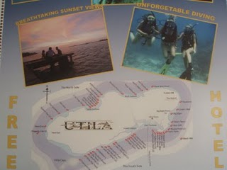
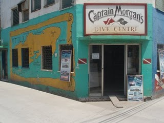
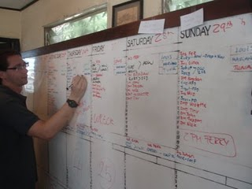
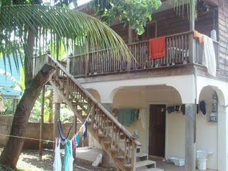

Orta Amerika’nın ortasında, Karayip Denizi’nin tropikal sularına bu kadar yakın olup anakaranın ortasında bir gölde dalış işinde çalışmak Türkiye’den gelen bir insan için oldukça absürd bir durum aslen. Bu absürdlüğün farkında olmama rağmen Atitlan’daki 3 ay, zihnimin Türkiye’den Guatemala’ya ulaşması için geçen süreydi bana kalırsa. Bedenimin aynı yolculuğu 15 saatte yapmış olması hiç birşeyi değiştirmiyor. Velhasıl kelam, ben yine topladım tası tarağı, Honduras’takı Utila adasına doğru inceden yola koyuldum. Arada zihnimi boşaltmak için Guatemala City’de bir hafta geçirdim. Eski ve yeni, biten ve başlayan arasındaki analojiye şimdi hiç girmesem daha iyi. Ama özetle yeni bir yerde yaşamaya başlamadan önce açılmış bohçaları toplayıp şimdi ben kim oldum sorusuna değişik değişik cevaplar geliştirdim kendimce. Utila’da yenı bır iş aramak ve bir ev bulup yeniden yerleşmek için ihtiyacım olan motivasyonu toparladığımda yola çıktım.
Guatemala city’den Honduras’taki La Ceiba şehrine direk bir otobüsle 14 saatte ulaştım. 50 dolar otobüs parası evlat acısı gibi oturdu ama yolculuğu bölersem hem zaman kaybedip hem de daha fazla para harcayacağımı hesaplayıp kıydım paraya. Aslen Honduras Guatemala sınırındaki Kopan antik kentinde yolculuğu bölmek çok daha ucuza geliyor. La Ceiba, Utila ve Roatan adalarına giden deniz otobüsü seferlerinin kalktığı yer. Oradan bir saatlik deniz yolculuğundan sonra Utila’ya ayak bastım. Utila Adası aslen karayip korsanlarının yerleştiği ve yakın zamana kadar oldukça özerk bir yönetime sahip olmuş bir yer. Şu anda Honduras’ın bir parçası olsa da çoğunluğu ingilizce konuşan adalılar kendilerini Honduraslı olarak görmüyor. Neredeyse hepsi beyaz avrupalı genlere sahip zaten. Ama konuştukları ingilizceyi anlamak sanırım benim birkaç ayımı alacak.
Utila, son 30 yılda dalış turizmiyle oldukça ün yapmış bir yer. Roatan adasından farklı olarak dalış fiyatlarının düşük olması adayı Backpacker (bizim bitli turist diye tabir ettiğimiz) rotasında kaçınılmaz bir durak haline getirmiş. Yaklaşık 15 tane dalış okulu birbirileriyle kıyasıya rekabet halinde adada dalış işini yürütüyorlar. İskeleden iner inmez dalış okullarının çalışanlarından oluşan bir ordu size kendi okulunun avantajlarını anlatmak için hazır bekliyor. Dalış sektörünün işleyişini KaÅŸ’ta öğrendikten sonra böylesine agresif pazarlama taktikleri içeren kıyasıya bir dalış okulları rekabeti görmek pek de huzur verici değil. Ama bir yılda Dünya’da en fazla dalış eğitimi verme rekorunu elinde bulunduran okul da bu adada bulunuyor.Adada bulunan bütün yabancılar ya dalgıç ya da dalış eğitimi alıyor. Dalışın bu kadar ortak ana gündem olduğu bir yerde bulunmak benim için oldukça yeni bir deneyim. Merakla gözlemliyorum ortalığı.
İlk olarak bulabileceğim en ucuz otele yerleşip bir soluklandım. Geceliğine beş dolar, orta amerika hotel standartlarında oldukça pahalı aslında. Kendime iş aramak için 1 ay süre verdim ve iş bulamazsam adada daha fazla zaman geçirmeyip artık geride bıraktığım evim gözüyle
baktığım Guatemala’ya dönmeyi tasarladım. Beni tanıyanlar bütün hayatımı en kötü durum senaryolarına göre kurup her zaman çok alternatifli yaşamaya çalıştığımı bilir herhalde. Bu güvenlik sendromu, bodoslama yeni bir ülkeye girerken açıkçası pek de yardımcı olmuyor. Ama eski alışkanlıklar da kolay terkedilmiyor. Du bakalım noolcak deyip 2 günde bütün dalış okullarını dolaşıp CV bıraktım. Birkaç ciddi görüşme yaptıktan sonra Captain Morgan’s dalış merkezi beni denemek için dalışa davet ettiler. Bir haftanın sonunda da dalış rehberi olarak işe kabul edildim.
Ä°ÅŸin komik tarafı orta amerika’ya geldiğimden beri karşılaştığım tek türk olan fevzi’nin de aynı okulda çalışıyor olması. Fevzi okulun eğitmenlerinden birisi ve benim KaÅŸ’ta çalıştığım dalış okulundaki işinden benden bir sezon önce ayrılmış. Aynı dönemde Antalya’da lise okumuşuz ve o kadar cok ortak tanıdığımız çıktı ki ben şu dakkaya kadar tanışmadığımıza hayret edip Honduras’ın bir adasında karşılaştığımıza pek şaşıramadım. İki türk bir eve yaraşır deyip beraber bir ev tuttuk. Türk örf ve adetlerini yaşatmaya and içip terliklerimizi çıkararak yeni evimize adım attık. Zulada tuttugum rakıyı gelecek hafta açacağız. Beyaz peynir var, kavun var, mezelik malzeme var hatta müzeyyen senar bile var. Hannah da geldi, rakı masası farz oldu haliyle.
Açıkçası, gurbetçilerin kendi içine dönük klanlarına ironik bir gülümsemeyle baktım hep. Bu yüzden Türk’e ve Türkçe’ye dair artan hevesimi izleyerek kendimle dalga geçiyorum. Ama diğer yandan, Türkiye’de sürekli uyanık tuttuğum antimilliyetçi refleksimin, yaşadığım (ve evet kabul ediyorum: ait olduğum) kültüre ve zenginliklerine olan takdirimi körelttiğini görüyorum. Yeni ve yabancı olan karşısında panikleyip en tanıdık şeylere tutunma ihtiyacı bilinç altımızda kocaman bir yer kaplıyor. Yine de kavramlar ve anlamlar çorbasına çok boğulmadan, yeni durumun beni taşıdığı zihinsel noktayı eğlenerek izliyorum. Köln’de dönerciler sokağında işe başlamadığımı ve son 4 ayda sadece 1 türk insanı ile karşılaştığımı düşünürsek paniğe mahal yok diyorum özetle. Sanırım kendimi alışılmış ve tanıdık olana karşı çok daha fazla tetikte tutma eğilimindeyim. Guatemala’dan ayrılırken yeni ve yabancı olana karşı hissettiğim tedirginliğin tam zıttıyla karşı karşıya kalmak gerçekten çok komik.
Ä°ÅŸte böylece adadaki onuncu günümde hem evim hem de işim oldu. Uzun aradan sonra turkce geyige sardırmak garip oluyor.Ama bünye de özlemiş geyik muhabbetini. Sabahın köründe Fevzi’yle abi şimdi deniz anası naapıyodu konulu entellektüel tartışmaların tadını çıkarıyoruz.
Isırıyomuydu sokuyomuydu yoksa yakıyomuydu hala çözemedik. Bi bilen el atsın allah rızası için. Hatta ilk türkce telsiz muhabbetini de bugün yaptık. Kendimi fıkra gibi hissediyorum:
-Captain Morgan, Captain Morgan this is Hotel Keyla Come in
-This is captain Morgan go ahead
-Tuna abi senmisin?
-Fevzi naber olm
-İyidir, olm bak telsizden türkçe konuşmak da varmış puhahahaha…
-puhahaha…
-Abi bikac ricam olacak Utila’dan
-Buyur abicim emrin olur :)))
…. (şeklinde devam ediyor)
Adadaki dalış noktalarından ve genel olarak benimsenen dalış kültüründen uzun uzun bahsetmek istiyorum ama bir sonraki yazının konusu olarak erteleyip simdi pek ayrıntıya girmeyecegim. Günde dört dalış ve 71 adet dalış tüpünü 4 kere tekneye yükleyip boşaltmak ilk günlerde biraz ağır geldiyse de tempoya alıştım sayılır. Mercan resifinde dalmak ve onlarca farklı tür canlıyı görmek gerçekten büyüleyici. Ben hala burada dalış rehberliği yapıp üstüne bir de para kazanmanın şaşkınlığı içerisindeyim. Onlarca dalış noktası var ve ben yoğun ve heyecanlı bir öğrenme dönemindeyim. Balık isimleri, dalış noktaları ve navigasyonu, akıntılar ve nerede ne arayacağımı hızla öğrenmeye çalışıyorum. Suyun üstünde de dalış okulunun işleyişini öğrenmek ve kendimi bir yerlerde konumlandırabilmek için elimden gelen çabayı gösteriyorum.
Ama sanırım en zoru Fevzi’nin biyerlerden bulduğu külüstür bisikleti kullanmayı öğrenmek oldu. Bisikletin önceki sahibi, frenlere ve vites takımına çok da gerek olmadığına karar vermiş anlaşılan. Zincir atmasın diye sürekli pedal çevirmek gerekiyor.Vites değiştirme işini de durup zinciri elle attırarak yapıyorum. Gün içindeki en büyük eğlencelerimden birisi oldu bisiklet. Tamir ettirmek çok sıkıcı bir alternatif gibi gözüküyor. Yolda beni izleyenler de en az benim kadar eğleniyor gözlemlediğim kadarıyla 🙂
Bu aralar hayatın akışı tam istediğim yönde. Mutluyum ve su anda hayattan isteyebilecegim baska bisey yok. Hersey istedigim yerde, yerli yerinde. Ben bir sureligine buradayım. Yerini, yönünü, yolunu sapıtanlara duyurulur.Yolunuz duserse beklerim efenim.
ps: Gecen yazıda bahsettiğim BaykuÅŸ’un birkaç gün önce öldüğünü öğrendim. Göldeki kazada kaybolan bir kişi de hala bulunamadı. Soran merak edenlere duyurulur.


{kind=link}
{kind=link}
{kind=link}
{kind=link}
{kind=link}
Kardeşim adına çok sevindim. Önemli olan senin mutlu olman. Benim motorla yapmak istediğimi sen Sandaletle yapıyorsun.
Benim için idol gibi ilah gibisin.
Oktay Şancı
Tunacim seni ne kadar kiskandigimi anlatamam, inan.. Bu milliyetcilik kismina gelice de abicim sen dur durdugun yerde 🙂 Buralar ayni boktanliginda. Yani bir Turkle Antalya’da, Kas’ta karsilasamayip Utila’da karsilasman da Tanri’nin laneti olsa gerek :))) Raki masaniz senlikli, dalislariniz bol kesifli olsun. Kucaklayip operim cokkk… Veee ben de gezgin olucam buyuyunce, naaberrr :)))- Ayşe, yeşil olan 🙂
yahu yıllardır görüşmedikten sonra seni böyle bir yazıyla tekrar bulmak çok ilginç gerçekten…
naapmışsın oolum sen?….
fırat tügen
Olum tam yaşanacak yerlere gitmişsin, bravo! deniz, kum, palmiyeler.. İşte böyle yerlerde yaşadığını daha iyi anlıyor insan 🙂
Ben de yazın otostopla Hindistan’a gidiyorum hayırlısı; şans dile bana!
Bora
“Bu absürdlüğün farkında olmama rağmen Atitlan’daki 3 ay, zihnimin Türkiye’den Guatemala’ya ulaşması için geçen süreydi bana kalırsa. Bedenimin aynı yolculuğu 15 saatte yapmış olması hiç birşeyi değiştirmiyor.”
Ne güzel ifade demişsin.
Otele yerleştiğin ve iş bulmak için kendine bir ay verdiğin kısmı okurken içimden “eğer Guatemla’ya dönmek zorunda kalacak olursa isteyeceğim bir PayPal hesabı, ben alacağım dönüş biletini lan” filan diyordum. Bu yüzden iş bulmana bir değil iki sebepten ötürü sevindim (böyle de kendi kendine kurup sonra da kendisini yoktan yere sevinçlere boğan bir karaktere sahibimdir (hem çok da iyi çalışır her tür işi yapar azıcık para ile n,şr geçinirim, oraya gelsem bir şansım olabilir mi? (fotoğraf çekiyor ve bass çalıyorum bir de (bilgisayarlardan da çok fena anlarım)))).
Şimdi baktım buradan oraya uçak biletleri 300 dolar civarı. Şöyle bir haftalığına gelsem sizin kapının önünde yatsam Fevzi ile acır içeri alırsınız herhalde 🙁
Olm Tuna senin macerayi seven adam oldugunu biliyordum. Ama bu kadarini beklemiyordum. 🙂
Helal sana, aslina bakarsan ben de cok isterdim senin kadar ozgur ruhlu olabilmeyi ama bizi baglayan baglar cok kuvvetli, ayrilamiyoruz. Selamlar.
Herkese yorumlarından dolayı cok tesekkur ederim. Yazmaya tesvik etmenin yanında gercekten cok iyi hissettiriyor. Burası Turkiye’den cok uzak gozukse de aslında benim yaptığım atla deve değil. Bu tarafa cok fazla gelen yok sadece fark o.
Eren! You made my day! demek istedi deli gönül. Henuz tanışmadık ama tabi ki seni evimizde ağırlamaktan gurur duyarız. Ama su 300 dolara ucak biletini nerden buldugunu soylersen ben haftasonu icin istanbula gelip gidebilirim sanırım 🙂 Mesele aslında tamamen gozu karartıp yola cıkmakla ilgili. Bilgisayar biliyorsan sırtın yere gelmez bence. Yavas seyahat edersen genelde hostel ve lokantalarda en azindan yemek ve yatak karsiligi is bulmak hic zor degil. Utila ile ilgili uzun uzun yazacağım ama dalmıyorsan Utila adası biraz sıkıcı kacabilir. tabi cok goreceli bir durum gelip kendin gormen lazim. Ya bu donus biletimi almayı dusunmen gercekten cok etkiledi beni. Cok tesekkur ederim.
Aslan abicim kac yil oldu gorusmeyeli kim bilir. evlendin mi yoksa hangi baglardan bahsediyorsun?
Fırat insanı! seninle en son hatırladığım diyalog biraz acılıydı. Biz nazımla Palandokenin zirvesinde gotumuzu dondururken seninle telefonda konusmustuk. konusma sırasında cadirda ortam sicakligi -10 disarisi -30 dereceydi. Sen de kaloriferin onunde ne kadar terlediğinden bahsetmistin.
Yorum yazan herkese cok tesekkurler.
Tuna
Bende seni Gurcan Yurt’un Robinson Cruso ve Cuma dergisini takip eder gibi takip ediyorum.
Onlar iki yaramaz çocuk, onlar iki yalnız hınzır, onlar iki kankaydılar. Issız bir adaya mahkum olmuş iki zavallıydı onlar. Kuşların uçtuğu ama kervanların geçmediği bir yerde, kendi dünyalarını kurdular onlar da kendilerine.
Britanya’ nın bağrından kopup gelen Robinson ve ıssız kumsalların şoparı Cuma, palmiyelerin gölgesinde kendi destanlarını kendileri yazdılar. Umut şarkılarını birlikte söylediler kumsalda ıslık çalarak. Yalnızlığa karşı savaş açtılar ve kimsenin görmediği, kimsenin duymadığı, hiç kimsenin hissetmediği o kara parçasında, her şeye rağmen, delikanlılığın hakkını da verdiler. Kendi alemlerinin kralı ve soytarısı da yine kendileri oldular…
Onlar var ya onlar… Onlar, öyle böyle değiller. Onları anlatmak mümkün mü?.. Okumak lazım onları, görmek lazım.. Manyak oğlum onlar, manyak. Manyaak!
Ozlem Can
Sevgiler
Henuz tanışmadık ama tabi ki seni evimizde ağırlamaktan gurur duyarız.
Yaşasın! 🙂 Hem tanışmak hem de Güney Amerika’nın incisi Honduras’ımızın biricik Utila’sını görmüş olmak için geleceğim gelebilirsem (doktora öğrencisiyim New Orleans’ta, istesem de bir iki günden fazla kalamam zaten).
Ama su 300 dolara ucak biletini nerden buldugunu soylersen ben haftasonu icin istanbula gelip gidebilirim sanırım 🙂
Ben New Orleans’ta yaşıyorum. İstanbul’dan 300 dolara bilet bulmak imkansız olsa gerek, üzgünüm.
Ne kadar ilgini çeker bilmiyorum ama Kuzey Amerika’nın dominant ülkesi ABD’mizin yaşayan tek beldesi, biricik New Orleans şehrine gelirsen kapımız elbette ardına kadar açık.
abi benim ismimde tuna ben 11 yaşındayım